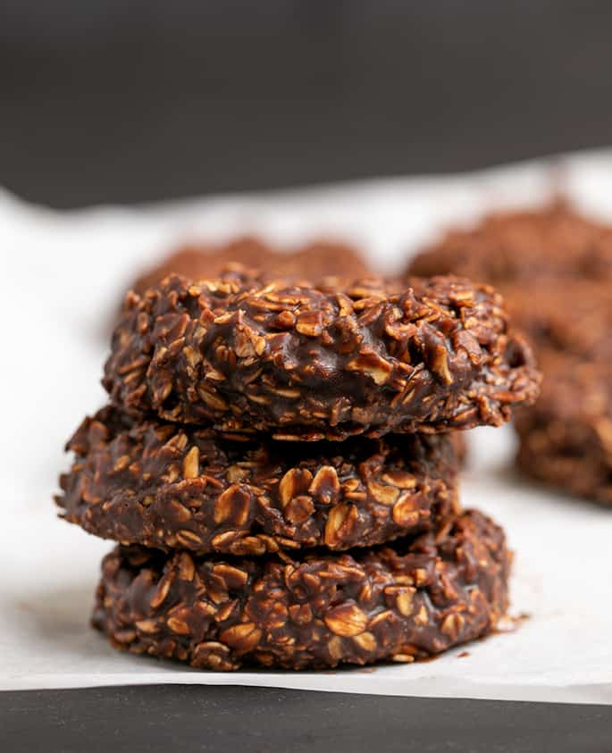

Oat Cookies

Description
This is the best recipe for making no bake oatmeal cookies because it has all the ingredients you'd expect, but replaces one old ingredient (peanut butter) with a new ingredient (chopped chocolate). Adding chocolate to the melted butter, milk, and sugar helps the cookies return to solid form once they cool.
Recipes for gluten free no bake oatmeal cookies made with butter, milk, sugar, cocoa powder and oats have been around forever. If you've tried making one of those “classic” recipes, though, they tend to be hit or miss because so many things can go wrong, preventing the cookies from setting.
Ingredients
- 3 cups (330 g) certified gluten free quick-cooking oats
- ¼ cup (20 g) unsweetened cocoa powder, (natural or Dutch-processed)
- 8 tablespoons (112 g) unsalted butter, (or virgin coconut oil)
- ⅔ cup (5 ⅓ fluid ounces) milk
- 2 cups (400 g) granulated sugar
- ⅛ teaspoon kosher salt
- 4 ounces unsweetened chocolate, chopped
Steps
- Line large baking sheets with unbleached parchment paper and set aside. In a large mixing bowl, place the oats and cocoa powder, and toss to combine. Set the bowl aside.
- In a medium-size, heavy-bottom saucepan, place the butter or coconut oil, sugar, milk, and salt. Whisking frequently, bring the mixture to a rolling boil over medium-high heat.
- The mixture will bubble quite a lot. Just continue to whisk. Allow the mixture to boil for a full 2 minutes, whisking frequently.
- Remove the saucepan from the heat, add the chopped chocolate and mix until the chocolate is melted, and the mixture is smooth.
- Allow the sugar and chocolate mixture to cool for about 2 minutes before proceeding with the recipe.
- Create a well in the center of the oats in the large bowl and pour in the sugar mixture. Mix to combine well.
- The mixture will be thick but soft. Allow it to sit at room temperature for 5 to 10 minutes to allow it to begin to firm up.
- Using a large ice cream scoop or two spoons, scoop the cookie dough in 2 tablespoon portions onto the prepared baking sheets, about 1-inch apart from one another. Spread each gently into an approximately 2-inch round.
- Allow the cookies to set at room temperature or in the refrigerator. After about 30 minutes, you should be able to peel them off the parchment paper.
- Store the finished cookies in a sealed glass container at room temperature or in the refrigerator.
Home